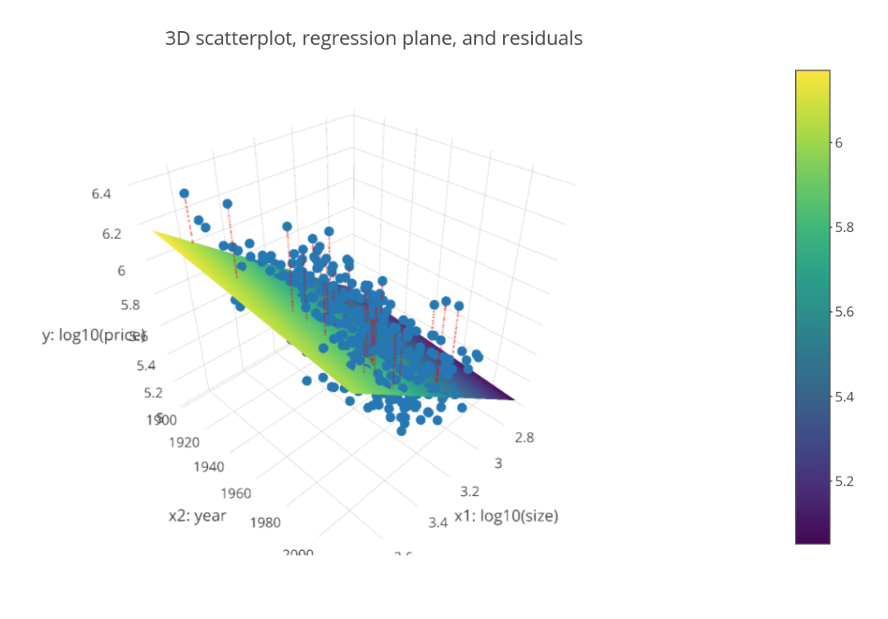

3 Modeling with Data in the Tidyverse
3.1 Introduction to Modeling
General modeling framework formula:
\(y = f(\overrightarrow{x}) + \epsilon\)
- \(y\): outcome variable of interest, the phenomenon you wish to model
- \(\overrightarrow{x}\): explanatory/predictor variables used to inform your model
- \(f()\): function of the relationship between \(y\) and \(x\) (the signal)
- \(\epsilon\): unsystematic error component (the noise)
3.1.1 The modeling problem for explanation
\(y = f(\overrightarrow{x}) + \epsilon\)
usually you won’t know the true form of \(f()\), nor the mechanism that generates the errors \(\epsilon\)
you will know the observations \(y\) and \(\overrightarrow{x}\), as they are given in our data
the goal is to construct or “fit” a model f-hat that approximates \(\hat{f}()\) while ignoring \(epsilon\)
goal restated: separate the signal from the noise
then generate fitted/predicted values \(\hat{y} = \hat{f}(\overrightarrow{x})\)
univariate: only considering one variable at a time
overplotting: adding random jitter geom_jitter()
Correlation coefficient:
cor(), a summary statistic between -1/1 measuring the strength of linear association of two numerical variables, or the degree to which points fall on a line
3.1.2 The modeling problem for prediction
Key difference in modeling goals:
Explanation:
We care about the form of \(\hat{f}()\), in particular any values quantifying relationships between \(y\) and \(\overrightarrow{x}\)Prediction:
We don’t care so much about the form of \(\hat{f}()\), only that it yields “good” predictions \(\hat{y}\) of \(y\) based on \(\overrightarrow{x}\)
3.2 Modeling with Basic Regression
3.2.1 Refresher: Modeling in general
Truth:
Assumed model is \(y = f(\overrightarrow{x}) + \epsilon\)
Goal:
Given \(y\) and \(overrightarrow{x}\), fit a model \(\hat{f}(\overrightarrow{x})\) that approximates \(f(\overrightarrow{x})\), where \(\hat{y} = \hat{f}(\overrightarrow{x})\) is the fitted/predicted value for the observed value \(y\)
3.2.2 Modeling with Basic Regression
Truth:
- Assume \(f(x) = \beta_0 + \beta_1 \cdot x\)
- Observed value \(y = f(x) + \epsilon = \beta_0 + \beta_1 \cdot x + \epsilon\)
Fitted:
- Assume \(\hat{f}(x) = \hat{\beta}_0 + \hat{\beta}_1 \cdot x\)
- Fitted/predicted value \(\hat{y} = \hat{f}(x) = \hat{\beta}_0 + \hat{\beta}_1 \cdot x\)
Regression line
# Add a "best-fitting" line
geom_smooth(method = "lm", se = FALSE)Equation for fitted regression line: \(\hat{y} = \hat{f}(\overrightarrow{x}) = \hat{\beta}_0 + \hat{\beta}_1 \cdot x\)
Computing slope and intercept of regression line
Using the formula form y ~ x, which is akin to \(\hat{y} = \hat{f}(\overrightarrow{x})\)
# Fit regression model using formula of form: y ~ x
# y: outcome, x: explanatory variable
model <- lm(formula = score ~ age, data = evals)
# Output regression table using wrapper function
get_regression_table(model)3.2.3 Predicted value
Predictive regression models in general:
\(\hat{y} = \hat{f}(x) = \hat{\beta}_0 + \hat{\beta}_1 \cdot x\)Our predictive model: \(sc\hat{o}re = 4.46 - 0.006 \cdot age\)
Our prediction: 4.46 - 0.006 x 40 = 4.22
3.2.4 Prediction error
Residuals as model errors
- Residual = \(y - \hat{y}\)
- Corresponds to \(\epsilon\) from \(y = f(\overrightarrow{x}) + \epsilon\)
- For our example instructor: \(y - \hat{y} = 3.5 - 4.22 = -0.72\)
- With linear regression, sometimes you’ll obtain positive residuals and other times negative.
In linear regression, they are on average 0.
Computing all predicted values
# Get information on each point
model <- lm(formula = score ~ age, data = evals)
get_regression_points(model)
# A tibble: 463 x 5
ID score age score_hat residual
<int> <dbl> <dbl> <dbl> <dbl>
1 1 4.7 36 4.25 0.452
2 2 4.1 36 4.25 -0.148
3 3 3.9 36 4.25 -0.348
4 4 4.8 36 4.25 0.552
5 5 4.6 59 4.11 0.488
6 6 4.3 59 4.11 0.188
7 7 2.8 59 4.11 -1.31
8 8 4.1 51 4.16 -0.059
9 9 3.4 51 4.16 -0.759
10 10 4.5 40 4.22 0.276
# ... with 453 more rows3.2.5 Fitting a regression with a categorical x
return group means of different categories of x
# Fit regression model
model_score_3 <- lm(score ~ gender, data = evals)
# Get regression table
get_regression_table(model_score_3)
# A tibble: 2 x 7
term estimate std_error statistic p_value lower_ci upper_ci <chr> <dbl> <dbl> <dbl> <dbl> <dbl> <dbl>
1 intercept 4.09 0.039 106. 0 4.02 4.17
2 gendermale 0.142 0.051 2.78 0.006 0.042 0.241
# Compute group means based on gender
evals %>%
group_by(gender) %>%
summarize(avg_score = mean(score), sd_score = sd(score))
# A tibble: 2 x 2
gender avg_score sd_score
<fct> <dbl> <dbl>
1 female 4.09 0.564
2 male 4.23 0.522
# Get information on each point
get_regression_points(model_score_3)
3.3 Modeling with Multiple Regression
3.3.1 Combining numerical variables
Fit regression model using formula of form: y ~ x1 + x2
# y tilde x1 PLUS x2, where the plus indicates you are using more than one explanatory variable
model_price_1 <- lm(log10_price ~ log10_size + yr_built, data = house_prices)
# Output regression table
get_regression_table(model_price_1)Best fit and residuals
# Computing all predicted values and residuals
get_regression_points(model_price_1)
# Square all residuals and sum them
get_regression_point(model_price_1) %>%
mutate(sq_residuals = residuals^2) %>%
summarize(sum_sq_residuals = sum(sq_residuals))
Just as with “best-fitting” regression lines, of all possible planes, the regression plane minimizes the sum of squared residuals. This is what is meant by “best fitting” plane.
3.3.2 Combining numerical and categorical variables
Recall the notion of a “baseline for comparison” level when using a categorical variable in a regression model.
model_price_3 <- lm(log10_price ~ log10_size + condition, data = house_prices)
get_regression_table(model_price_3)
# A tibble: 6 x 7
term estimate std_error statisthouse price for condition3:
\(\hat{y} = 2.88 +0.032 + 0.837 \cdot 2.90 = 5.34\)
importing new data frame:
get_regression_points(model_price_3, newdata = new_houses)
3.4 Model Assessment and Selection
3.4.1 Assessing with sum of squared residuals
get_regression_point(model_price_1) %>%
mutate(sq_residuals = residuals^2) %>%
summarize(sum_sq_residuals = sum(sq_residuals))3.4.2 Assessing with R-squared
R-squared is another numerical summary of how well a model fits points.
Variance 方差: another measure of variability/spread, \(sd ^ 2\)
R-squared
1 minus the variance of the residuals over the variance of the outcome variable:
\(R^2 = 1 - \dfrac{Var(residuals)}{Var(y)}\)
- Since \(Var(y) \geqslant Var(residuals)\), so \(R^2\) is between 0 & 1
- Smaller \(R^2\) ~ “poorer fit”
- \(R^2 = 1\) ~ “perfect fit” and \(R^2 = 0\) ~ “no fit”
\(R^2\) is the proportion of the total variation in the outcome variable \(y\) that the model explains.
get_regression_points(model_price_1) %>%
summarize(r_squared = 1 - var(residual) / var(log10_price))3.4.3 Assessing predictions with RMSE
Root mean squared error 均方根误差:
# Mean squared error
get_regression_point(model_price_1) %>%
mutate(sq_residuals = residuals^2) %>%
summarize(mse = mean(sq_residuals))
# Root mean squared error 最后一步开根号
get_regression_point(model_price_1) %>%
mutate(sq_residuals = residuals^2) %>%
summarize(mse = mean(sq_residuals)) %>%
mutate(rmse = sqrt(mse))RMSE can be thought of as the “typical” error a predictive model will make.
3.4.4 “Validation set” prediction framework
This forms the backbone of a well-known machine learning method for model assessment called cross-validation.
Validation set approach
Use two independent dataset to:
- Train/fit your model on one set of data
- Evaluate your model’s predictive power, i.e., validate your model’s performance on a different set of data
Training/test set split in R
# Randomly shuffle order of rows:
house_price_shuffled <- house_prices %>%
sample_frac(size = 1, replace = FALSE)
# Split into train and test:
train <- house_price_shuffled %>%
slice(1:10000)
test <- house_price_shuffled %>%
slice(10001:21613) %>%
# Train model on train:
train_model_price_1 <- lm(log10_price ~ log10_size + yr_built, data = train)
# Get predictions on test:
get_regression_points(train_model_price_1, newdata = test)
# Assessing and comparing RMSE3.5 Where to go from here?
R source code for all videos
Available at http://bit.ly/modeling_tidyverseDataCamp courses using other models
Courses with different \(f()\) in \(y=f(\overrightarrow{x})+ε\):ModernDive: Online textbook
- Uses
tidyversetools:ggplot2anddplyr - Expands on the regression models from this course
- Uses
evalsandhouse_pricesdatasets (and more) - Goal: Statistical inference via data science
- Uses
More to explore:
- Parallel slopes model
- Polynomial model
- Tree models